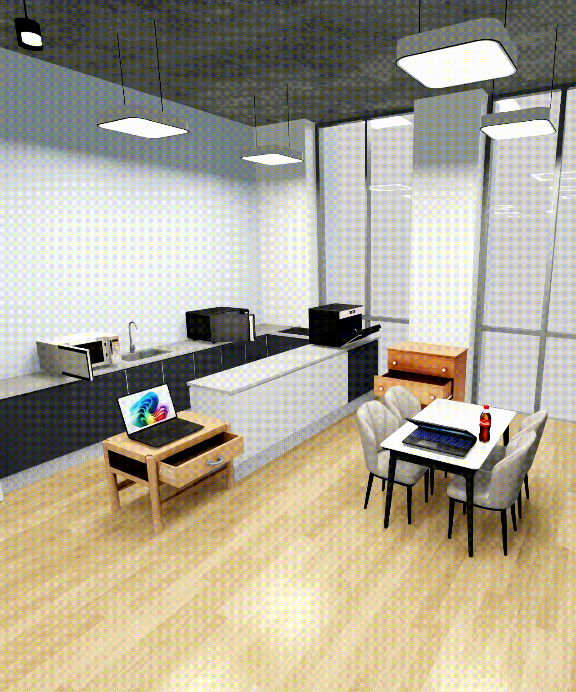

|
VLA-RL aims to advance robotic foundation models from broad pretrained priors to reliable real-world manipulation policies. We focus on three tightly connected directions: foundation model post-training, RL algorithm design, and effort-efficient real-world learning. First, we investigate how online reinforcement learning can adapt vision-language-action (VLA) models beyond the limited state distributions covered by offline pretraining, improving robustness in unseen environments. Second, we design reward, value, and policy optimization methods that provide stable learning signals for long-horizon, sparse-reward, and contact-rich manipulation tasks. Third, we develop sample-efficient and intervention-efficient training frameworks that reduce real-robot trial costs while preserving safety and scalability. Through these efforts, we aim to improve the generalization, success rate, and training efficiency of RL-enhanced robotic foundation models in challenging real-world manipulation scenarios, and scale RL into manufacturing applications. |

|
In embodied tasks, both environments and objectives are often highly complex. Nevertheless, long-horizon tasks can typically be decomposed into sequences of reusable skills. Our research focuses on building a skill-based Vision-Language-Action (VLA) framework that investigates: (1) how to automatically discover and represent meaningful skill spaces from data, (2) how to explicitly or implicitly select appropriate skills for a given context and promote skill reusability across tasks. Ultimately, we aim to improve the generalization and efficiency of VLA models in diverse and dynamic scenarios. |
|
Mobile Manipulation
Mobile manipulation is one of the fundamental problems of embodied intelligent robots, which requires collaboration between navigation and manipulation. Existing approaches struggle with task generalization and whole-body control. This project empowers mobile ability to any off-the-shelf manipulation models through policy transfer approaches to achieve a highly generalized mobile manipulation framework in zero-shot manner. Further, we propose hierarchical mobile manipulation visuomotor policy to achieve flexible and feasible whole-body control trajectories |
|
Bimanual Manipulation
Bimanual manipulation aims to perform general tasks conditioned on language instructions, enabling applications from household service to industrial assembly. However, collecting bimanual data is costly due to the high-dimensional action space, and the inherent complexity of dual-arm systems makes coordinated control particularly challenging. To overcome these issues, we propose a plug-and-play framework that leverages pretrained unimanual skills by dynamically scheduling their representations and aligning visual observations through soft workspace masking. Our method achieves state-of-the-art performance on complex bimanual tasks such as pouring and sweeping, demonstrating strong generalization and coordination with minimal supervision. |
|
 |
Current VLA model training requires extremely large real-world datasets (~100k hours) with unacceptable data collection cost. Leverage world model to synthesis high-fidelity manipulation data both from explicit world modeling and implicit video generation. |
|
High-precision dexterous manipulation plays a critical role in embodied intelligent robots for industrial automation, especially in contact-rich and fine-grained manipulation tasks. Nevertheless, existing systems remain limited by insufficient tactile perception, expensive data acquisition pipelines, and weak generalization capabilities. Our research focuses on building a full-stack tactile and dexterous manipulation framework that investigates: (1) tactile-ready robotic end-effectors for robust interaction; (2) high-precision and low-cost dexterous teleoperation for tactile-enhanced manipulation learning; (3) tactile-based 3D geometry and force reconstruction for physical understanding; and (4) robotic foundation models for ego-centric bimanual dexterous manipulation. Ultimately, we aim to improve precision, adaptability, and scalability of robotic manipulation in diverse industrial environments. |